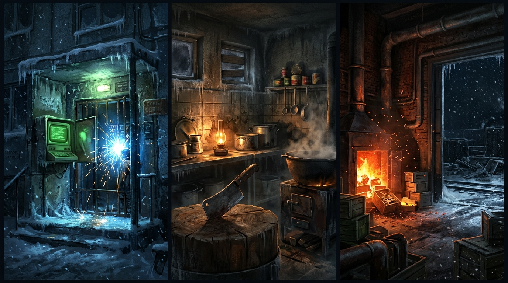
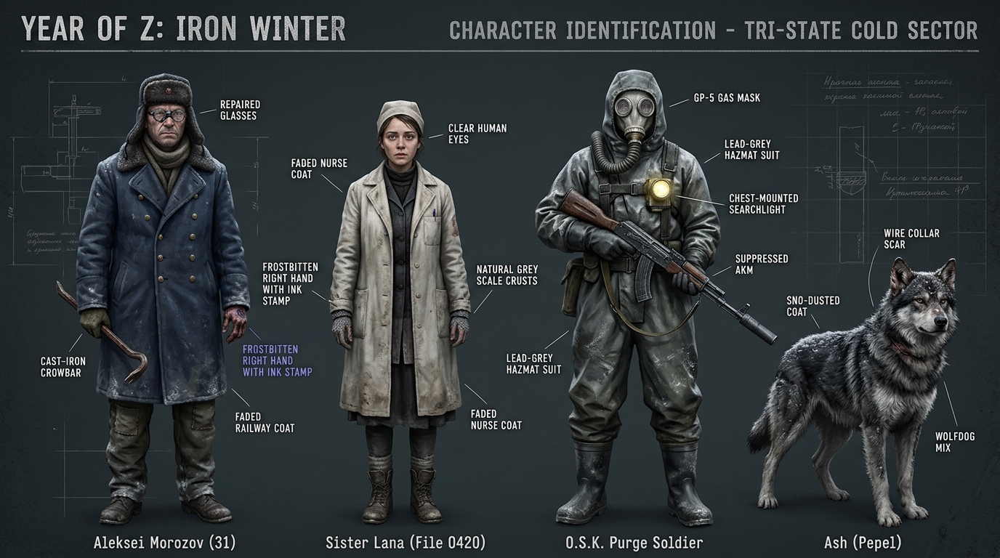
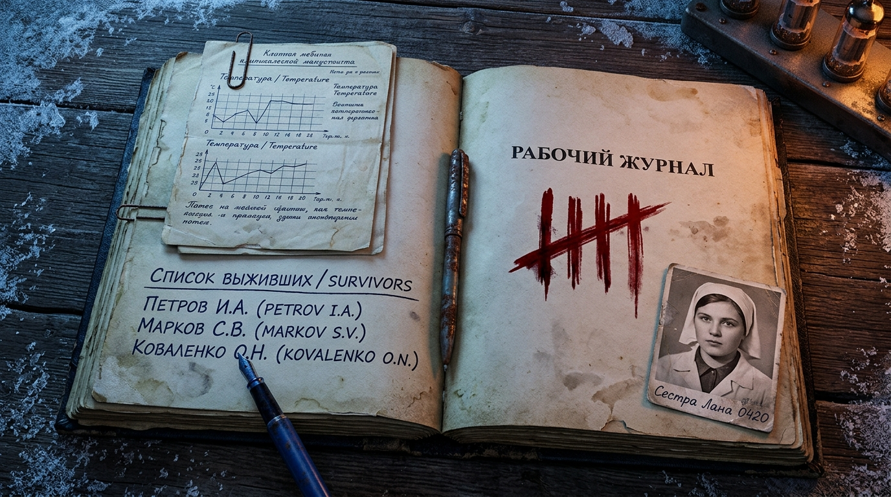

四大交互原型沙盘（全部已对齐 v4.0 诺沃斯克-17 中英双语设定）
探索循环 DEMO · Exploration Loop Demo
完整一夜循环：据点 602 室 → 地图选点 → 夜潜探索 → 搜刮 → 撤离 → 结算推进剧情 → 第二天。10 个节点、程序化关卡、三方潜行与伙伴系统。Base → Map → Night raid → Scavenge → Extract → Report → Next day.
5合1 可玩灰盒测试场 (Playable Greybox Gym)
包含清杀队 45° 探照灯【投掷空罐头借刀杀人 (Room A)】、【道钉撬棍卡门与12cm窄缝推饭盒 (Room B)】、【账面0人与半人抉择A (Room C)】、【灰狼犬“灰烬”三态嗅觉 (Room D)】及【东街后厨瓦西里锁骨卡刀 6连按 QTE 与 Пить 幻听 (Room E)】。
核心关卡俯视角平面动线图 (Tactical Flow Sandbox)
全面升级至 v4.0 诺沃斯克-17 中英双语版！涵盖 L02 四号冷库、L03 白桦林四点整死窗、L05 东街食堂锁骨卡刀、L07 松林庄园焦油黑雪、L10 302高地帕维尔万伏血肉闸刀，支持拖拽阿列克谢与“灰烬”并旋转 90° 视野。
双线汇聚与“卌”字划痕五结局模拟器
实时推演白昼守母（602室卡佳妈妈腹透）与黑夜寻妹（铁壳号第三节车厢拉娜·0420），交互测试抉择 A/B/C/D 如何改变《工作日志》背面的俄式“卌”字血划痕并分流向 5 大结局。
诺沃斯克-17 美术与氛围靶心（直接指导 Godot 4 Light2D 与 CanvasItem Shader 参数）

诺沃斯克-17 三幕冷暖色彩与光照脚本
① 赫鲁晓夫楼门岗：-30℃暴风雪青灰 + 苏制电传机【ВЫДАНО】惨绿荧光 + 蓝白电焊弧光；② 东街食堂后厨：煤油灯暖琥珀光 + 大铁锅蒸汽 + 砧板宽背砍骨刀；③ 松林庄园特供库：26℃暖黄吊灯 + 2000℃焚化炉火光 + 窗外焦油黑雪。

核心角色与“三态辨识”设定总表
主角阿列克谢（铁道部翻毛领大衣、黑胶布修补圆框眼镜、手背二级留观蓝印油、铸铁道钉撬棍）+ 妹妹拉娜0420与安娜0419（皮带自缚、手背灰鳞剥落）+ 内务清杀兵ОСК（铅灰防化服、GP-5猪嘴面具、消音AKM）+ 灰狼犬“灰烬（Пепел）”。

《双面工作日志（Рабочий Журнал）》与“卌”字账
翻开的背面设计：左页为钢笔手写的活人真名录（谢尔盖、玛丽亚、瓦西里、安娜0419）与曲别针别着的三页古丽娅《回退自愈临床手稿》；右页为俄式五道划痕计数法（卌，四竖一斜）与妹妹拉娜的一寸黑白旧照片。
已内置可直接导入 Godot 4.7+ 的三场景灰盒工程 (`godot_project/`)
核心剧本、GDD、灰盒规格书与 Godot 迁移指南
- 🕯 Godot 探索循环移植对照表 · 97 项测试清单 (ZH/EN) NEW · LOOP
- 🎮 Godot 灰盒 5 合 1 移植对照表 · 61 项测试清单 (ZH/EN) GYM
- 📘 Godot 4 引擎迁移技术规范与架构指南 (ZH/EN) NEW v4.0
- 🎬 《Z年纪事：凛冬铁轨》五幕完整总剧本 (ZH/EN) v4.0 Master
- 📐 游戏总策划案 GDD & 10大关卡蓝图 (ZH/EN) v4.0 Master
- 🔧 第一阶段灰盒原型规格书与美术清单 (ZH/EN) Phase 1 Spec